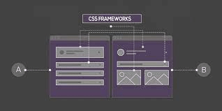

Hojas de Estilo en Cascada CSS

El lenguaje css es el encargado de definir, a los distintos navegadores, la forma en la que se debe mostrar los elementos y su posición en la página, permitiendo tener un mayor control sobre el diseño de una o varias páginas web. Las siglas css significan cascading style sheets (hojas de estilo cascada) ya que este estilo se va haciendo progresivamente (en cascada), con este estilo se le puede dar un aspecto visual muy elaborado y mas atractivo, además de poder definir estos estilos para diferentes medios o dispositivos como pantallas,impresoras,móviles,proyectores,etc.
Zafra, J. M. T. (2015). Elaboración de hojas de estilo. IFCD0110. IC Editorial.Frameworks CSS
Es un conjunto de herramientas, hojas de estilos y buenas prácticas que permiten al diseñador web olvidarse de las tareas repetitivas para centrarse en los elementos únicos de cada diseño en los que puede aportar valor.
Camaré, L. J. M., & Martínez, C. M. J. INGENIERÍA EN INFORMÁTICA.